Introducción
SOHOVet contiene un conjunto de módulos para Odoo (www.odoo.com) que permite la gestión de clínicas y hospitales veterinarios.
Versión inicial:
- Compras a proveedores.
- Gestión de precios basados en margen sobre el precio final.
- Exportación e importación de productos en formato xlsx para facilitar la modificación o incorporación de productos en lote.
- Gestión de propietarios y animales.
- Módulo de vacunación con posibilidad de definir reglas de vacunación y generar recordatorios de vacunas pendientes.
- Permite la conexión con el proveedor TextLocal para el envío de SMS con los recordatorios de vacunación.
Instalación
Nota:
Se instalarán también los siguientes módulos de python mediante
pip(http://www.pip-installer.org/):
- boto: Interfaz en python para Amazon AWS http://docs.pythonboto.org/
- xlsxwriter: Librería para escribir ficheros XLSX en python. https://xlsxwriter.readthedocs.org/
Para empezar a utilizar SOHOVet deberá partir de una instalación de Odoo.
- Descargar los módulos e instalar las dependencias.
$ git clone https://github.com/sohovet/sohovet.git
$ pip install -r requirements.txtMódulos
Módulo de vacunación
Desde el menú principal se puede añadir, editar o eliminar propietarios (clientes), animales y vacunas. También se tiene acceso a los recordatorios SMS, a todas las llamadas realizadas (sólo el usuario administrador) y a las llamadas pendientes de realizar.
También se añade opciones de configuración para el usuario administrador.
Animales
Propietarios
La ficha de propietarios extienda la vista de clientes de Odoo añadiendo pestañas que dan acceso a los animales del cliente, SMS y llamadas registradas y las citas del cliente. También se añade un botón para registrar una nueva llamada al cliente.
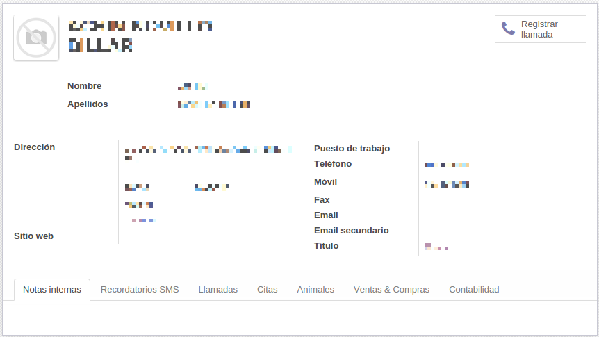
Animales
La ficha de animales da información básica sobre los animales así como las vacunas que se le han administrado. El tipo de animal permite definir distintos tipos de animales (gatos, perros, ...) y se utiliza principalmente para generar diferentes reglas de vacunación de acuerdo al tipo de animal.
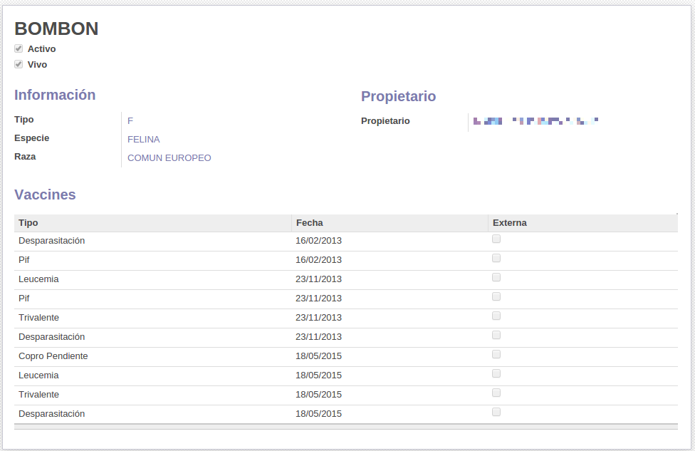
Vacunas
La ficha de vacunas nos da información sobre las vacunas administradas a un animal. La opción externa nos permite registar vacunas que no han sido administradas en nuestro centro.
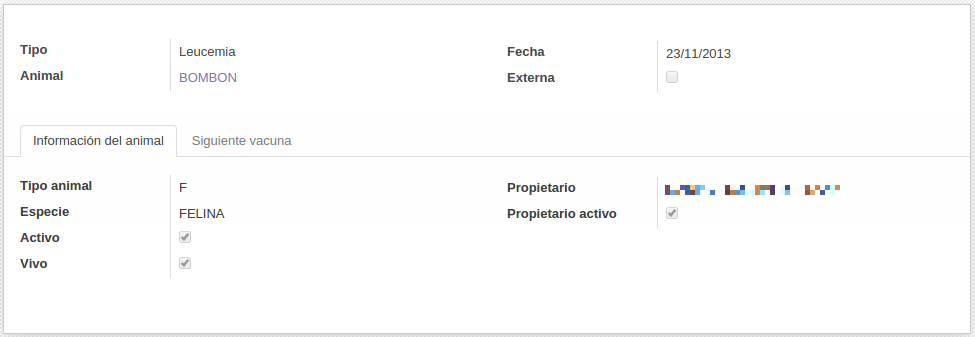
En la pestaña "Siguiente vacuna" se puede ver la fecha calculada en la que el animal debe volver a ser vacunado (de acuerdo a las reglas de vacunación). También nos indica si esa vacuna ha sido ya administrada y en qué fecha se hizo.
En la parte inferior nos muestra también los recordatorios SMS enviados al propietario para informarle de la necesidad de administrar la siguiente vacunación.
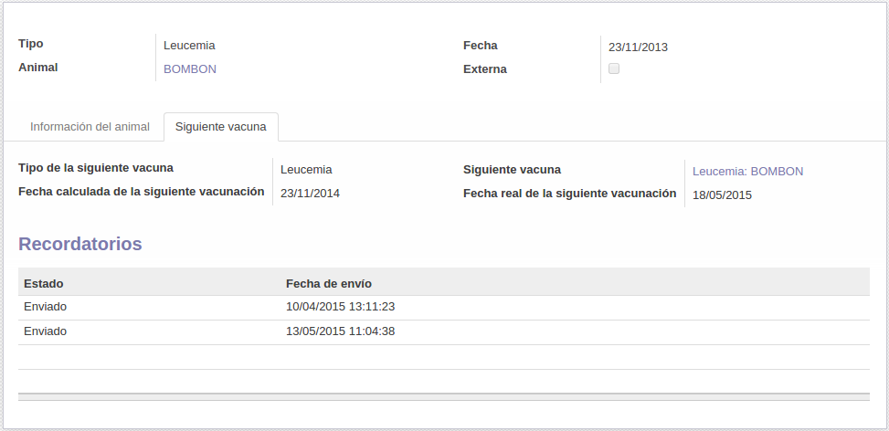
Recordatorios
Recordatorios SMS
Un recordatorio SMS es un mensaje a un cliente en el que se le recuerdan las vacunas pendientes para todos sus animales.
La ficha del recordatorio SMS nos muestra información sobre el propietario, las vacunas pendientes que han sido notificadas y la lista de llamadas que se han realizado al cliente referentes a este recordatorio.
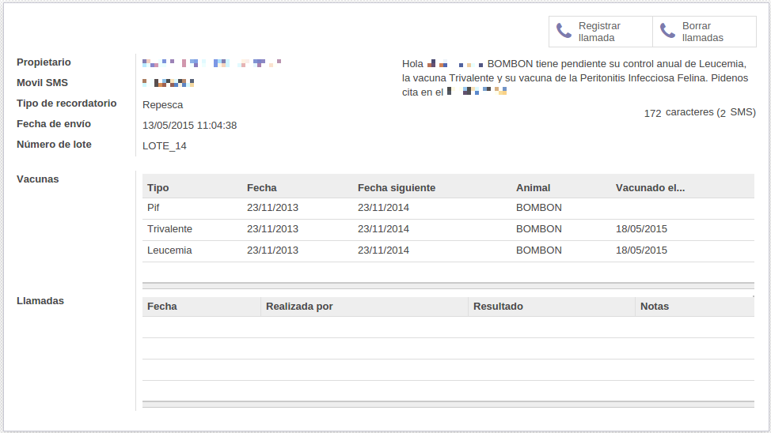
El asistente "Generar recordatorios" nos permite generar todos los recordatorios SMS pendientes de enviar para un rango de fechas determinado. El tipo de recordatorio puede ser "inicial" o de "repesca". Los recordatorios iniciales se generan para todos los clientes que tienen animales con vacunas pendientes y estas vacunas todavía no han sido notificadas. Los recordatorios de repesca se generan para aquellos clientes que han recibido un recordatorio inicial, pero no han administrado las vacunas a sus animales.
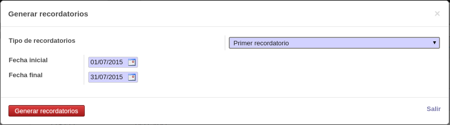
El asistente "Enviar lote" nos permite enviar un lote de tamaño determinado de recordatorios SMS previamente generados con el asistente "Generar recordatorios". Desde este asistente también podemos descargar una hoja de cálculo con los SMS que se van a enviar.
Nota:
El usuario administrador tiene también la opción de enviar todos los SMS pendientes.
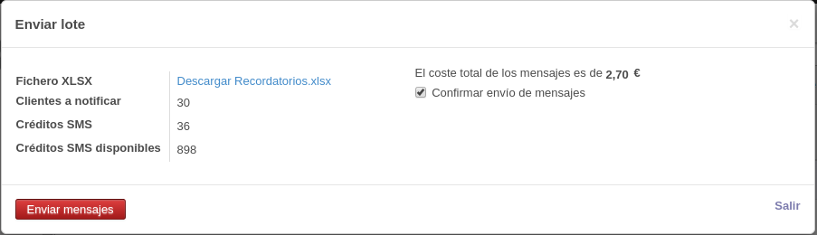
Llamadas
Las llamadas a clientes se realizan para notificar al cliente que sus animales tienen vacunas pendientes.
Nota:
Las llamadas son un medio secundario de comunicación y están asociadas a un recordatorio SMS previo. No se puede registrar una llamada si no se le ha enviado antes un recordatorio SMS.
Clientes a llamar
Mediante el asistente "Clientes a llamar" podemos generar una lista de clientes a los que es necesario llamar. En el asistente debemos seleccionar un lote de mensajes (de repesca). También podemos marcar si queremos que en ese listado aparezcan o no clientes a los que ya se les ha llamado, pero no fue posible contactar con ellos.
Nota:
La lista de clientes a llamar contiene los clientes que cumplen los siguientes requisitos:
- Han sido notificados por SMS en la fecha que se selecciona en el asistente.
- No han administrado a sus animales ninguna de las vacunas que se notificaron en el SMS.
- No tienen registradas citas con fecha posterior al envío del SMS.
- No se les ha registrado previamente otra llamada referente al SMS. Si no se ha marcado la opción "Excluir clientes imposible contactar" también aparecen aquellos con llamadas registradas con el resultado "Imposible contactar".

Una vez generada la lista de clientes a llamar podemos acceder a las fichas de los clientes. Desde esta ficha podemos registrar una llamada nueva. Esta llamada se asociará al último recordatorio enviado.
El asistente para registar una llamada nos permite almacenar el resultado de una llamada. El resultado de una llamada puede ser uno de los siguientes:
- Imposible contactar.
- No volver a llamar.
- Vacunado en otro centro.
- Pide cita.
- Propietario dado de baja.
- Animal/es dados de baja.
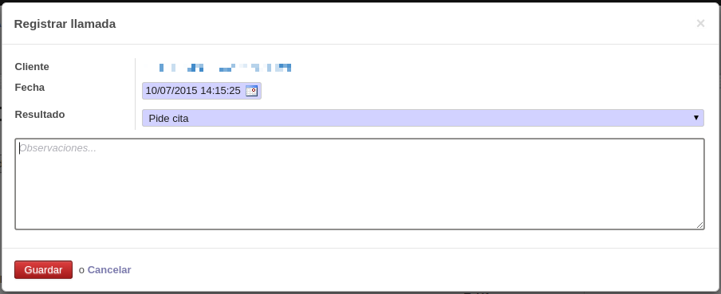
Configuración
Animales
En el submenú "Animales" dentro del menú de configuración se configuran los tipos de animales, especies y razas.
Tipos de vacuna
En la opción "Tipos de vacuna" se configuran los distintos tipos de vacuna que registraremos en el sistema.
Reglas de vacunación
Las reglas de vacunación nos permiten definir la periodicidad con la que un animal debe ser vacunado.
Ejemplo:
En los animales de tipo C (Can) la vacuna de la rabia se administra con una periodicidad de 12 meses.
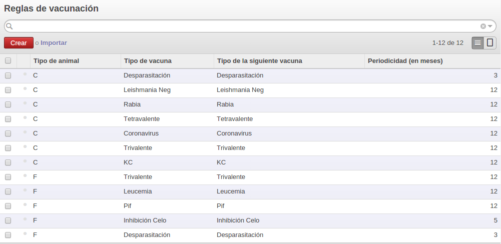
Configuración de mensajes
En la opción "Configuración de mensajes" podemos configurar diversas opciones relativas a los mensajes SMS. En este misma página se configuran los datos de la cuenta de TextLocal para el envío de SMS.
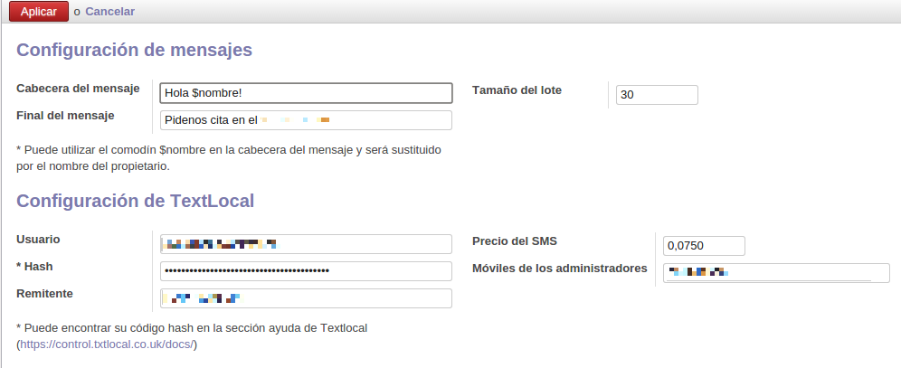
En la opción "Mensajes por tipo de vacuna" se establece el texto que se utiliza en la generación de los SMS.
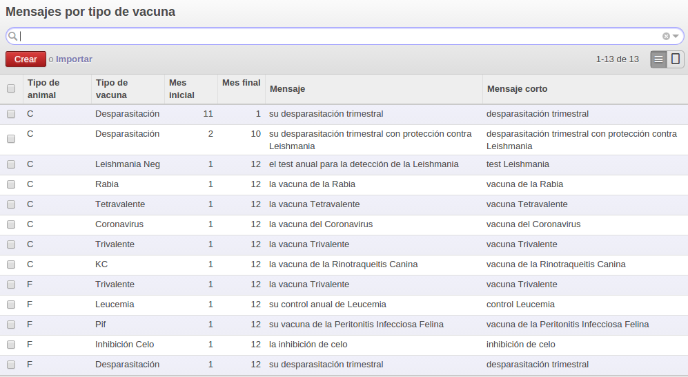
Ejemplos de uso
Generar y envíar recordatorios SMS iniciales
Ejemplo: Generamos todos los mensajes para el mes actual.
Pulsando en la opción "Generar recordatorios" se nos abre un asistente. El asistente por defecto muestra la opción de generar el primer recordatorio, la fecha inicial se corresponde con el primer día del mes actual y la fecha final con el última día del mes actual.
Pulsando el botón "Generar recordatorios" cerramos el asistente y se nos generará una lista de recordatorios en estado "borrador".
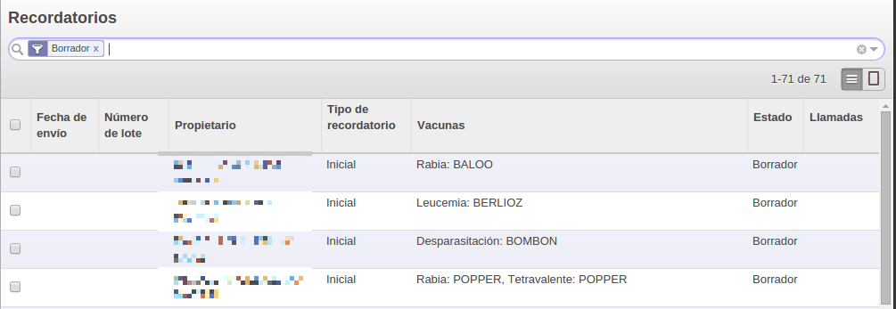
Envío de un lote de SMS
El envío de los recordatorios SMS se hace por lotes de un tamaño predeterminado (definido por el administrador).
Pulsando en la opción "Enviar recordatorios" se nos abre el asistente para su envío. El asistente nos informa del número de propietarios que se van a notificar, de los SMS que se enviarán, de los créditos que tenemos en nuestra cuenta del proveedor de mensajes y el precio total del envío. También nos permite descargar un fichero excel con la lista de mensajes que se van a enviar.
Nota: Es importante revisar la hoja de cálculo antes de enviar los SMS para corregir posibles errores.
Marcando la opción "confirmar envío de mensajes" y pulsando el botón "Enviar mensajes" se cierra el asistente y se envía el lote de mensajes SMS. Los recordatorios enviados pasarán al estado "enviado".
Nota: Se debe seguir enviando lotes de SMS mientras queden SMS en estado borrador. Generalmente se esperará un tiempo (por ejemplo un día) entre el envío de un lote y el siguiente.
Generar y envíar recordatorios SMS de repesca
Ejemplo: Generamos todos los mensajes de repesca del mes anterior.
Pulsando en la opción "Enviar recordatorios" se nos abre el asistente para su envío. En "Tipo de recordatorio" seleccionaremos la opción "Recordatorios de repesca" y, por defecto, nos cambiará la fecha inicial al primer día del mes anterior al mes en curso y como fecha final el última día del mes anterior al mes en curso. El número máximo de recordatorios anteriores lo dejamos en el valor por defecto (1).
Nota: La fecha inicial y final de los recordatorios SMS de tipo repesca se corresponden a las fechas en las que se enviaron los recordatorios SMS iniciales.
Ejemplo: Si seleccionamos enviar recordatorios SMS entre el 1 de Junio y el 31 de Junio se generarán los recordatorios de repesca correspondientes a los recordatorios iniciales enviados en el mes de Junio.
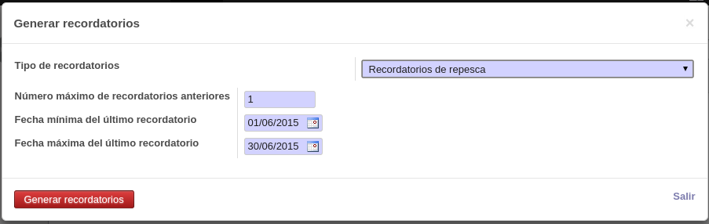
Pulsando el botón "Generar recordatorios" cerramos el asistente y se nos generará una lista de recordatorios en estado "borrador".
El envío de este lote de SMS se realiza del mismo modo que el envío de recordatorios SMS iniciales.
Gestión de llamadas pendientes
Ejemplo: Generamos la lista de llamadas pendientes para el lote enviado el LOTE 4, enviado el 23-04-2015.
Pulsando la opción "Clientes a llamar" generaremos un listado de clientes a llamar. En el asistente debemos seleccionar un lote de mensajes (de repesca). La lista de clientes a llamar se corresponde con los clientes del lote seleccionado que todavía no han vacunado a sus animales, no tienen citas pendientes y no se les ha llamado previamente en referencia a este mismo lote de mensajes (ver nota).
Nota: Las llamadas se pueden registrar con el resultado "Imposible contactar". Si en el asistente la opción "Excluir clientes imposible contactar" está desmarcada aquellos clientes que tengan llamadas en este estado también serán incluídos en el listado de llamadas pendientes.
Pulsando en el botón generar listado se cierra el asistente y nos aparecerá el listado de clientes pendientes de llamar.
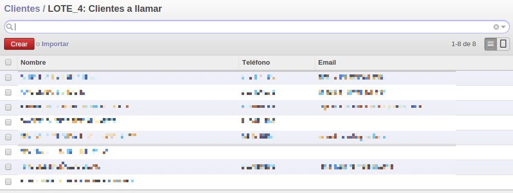
Pulsando en el primero de ellos accedemos a su ficha de cliente y desde ahí registraremos el resultado de la llamada.
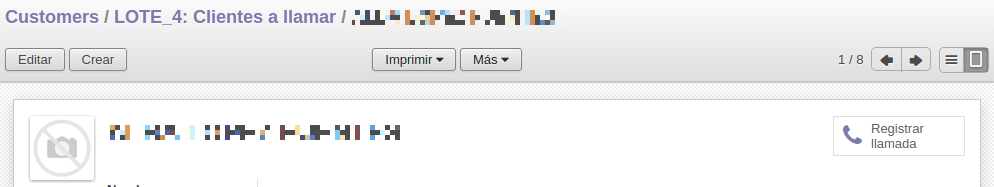
Nota: Podemos desplazarnos de un cliente a otro utilizando las flechas que aparecen en la parte superior derecha de la ficha del cliente.
Registrar una llamada
Pulsando en el botón "Registrar llamada" registramos el resultado de la llamada al cliente.